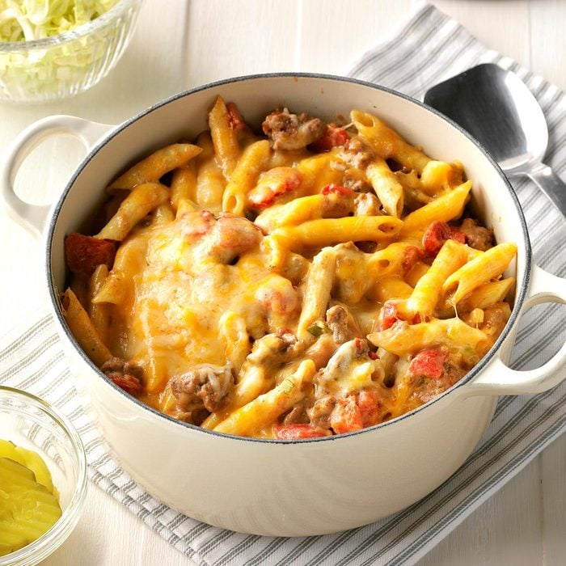

Stovetop Cheeseburger Pasta

Description
A cheeseburger made into a pasta!
Ingredients
- 1 package of 16 ounce penne pasta
- 1 pound ground beef
- 1/4 cup butter, cubed
- 1/2 cup of all-purpose flour
- 2 cups of 2% milk
- 1 1/4 cups of beef broth
- 1 tablespoon of Worcestershire sauce
- 3 teaspoon ground mustard
- 2 cans of diced tomatoes
- 4 green onions
- 3 cups of colby-monterey cheese
- 2/3 cup grated parmesan cheese
Steps
- Cook pasta according to the packaging, drain after
- In a dutchoven cook the beef over medium heat until there is no pink left. Remove beef and oil after 5-7 minutes
- In the same dutchoven, melt butter in low heat and stir flour til smooth. Cook and stir til lightly browned. Gradually wisk milk, broth, Worcestershire sauce, and mustard. Stir tomatoes and return to a boil. Reduce heat and simmer.
- Stir in green onions, pasta and beef, and stir cheese until melted. Sprinkle with remaining cheese and cover. Let sit until cheese is melted.